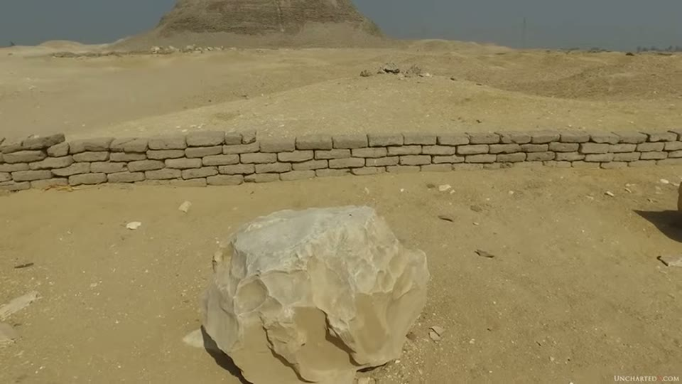
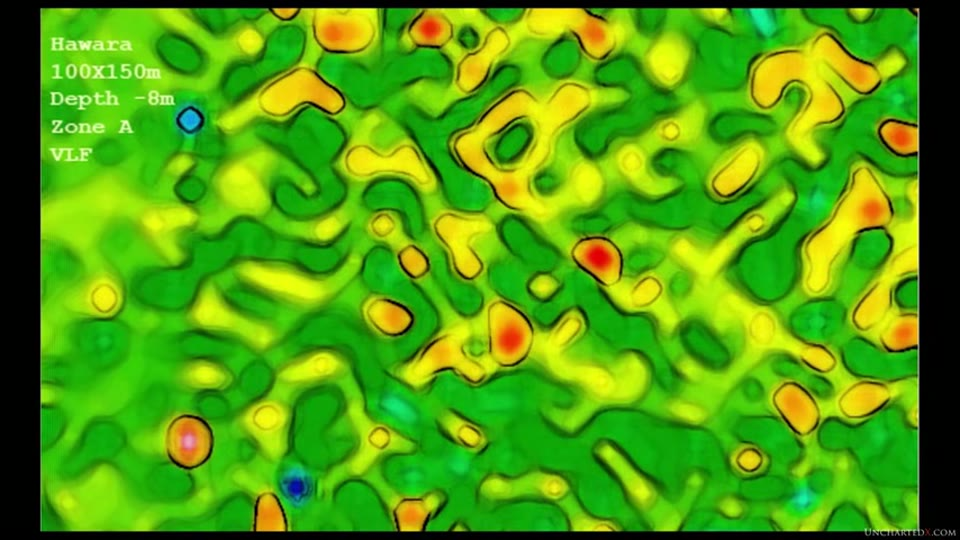
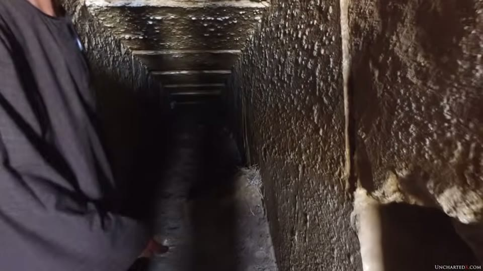
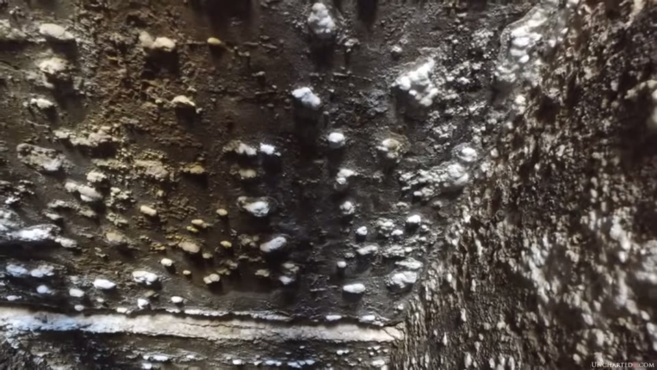

UnchartedX
Finding Ancient Egypt's Great Lost Labyrinth!
Ben van Kerkwyk · 43 min · watch on YouTube · summarised 2026-10-05
A site where almost nothing is visible above ground, and the whole argument is about what is underneath it. The case has three separable parts: a set of first-hand classical descriptions of a structure said to exceed the pyramids, Flinders Petrie's excavation and his conclusion about what he had found, and a 2008 geophysical survey whose results were presented at a university lecture and then, the video says, suppressed. A fourth part covers a separate set of claims about the same site, which the presenter examines and then declines to endorse.
Hawara, and what is left
Hawara sits roughly 90 km south of Cairo, at the entrance to the Fayum depression, with Lake Moeris at its northern edge; the modern town of Medinet el-Fayum was once Crocodilopolis and before that Arsinoe 02:52–03:06, 05:53–06:17. The presenter says he has visited twice 03:02–03:06.


What is visible above ground at the site the argument is about.
What is there now: fragments of granite columns carved in palm or lotus shapes, and other small pieces of stonework, laid out in a small open-air museum; and the pyramid of Amenemhat III, reduced to its mud-brick internal structure, though it was once a true pyramid cased in white limestone 03:06–03:40. The other dominating feature of the site is the Bahr Wahbi canal, which runs across the area where the remains are said to lie — to the south of the pyramid, on both sides of the canal, and presumably beneath it 03:40–04:00. (The canal's name is inferred from badly mangled auto-captions and should be checked.)
The Fayum basin was connected to the Nile by channels and canals and was inundated each wet season, and the form of Lake Moeris itself, he says, may be partly man-made — the subject of engineering projects by the pharaohs of the early Middle Kingdom 06:17–06:50.
Petrie, and what he concluded
The first real modern evidence came from Flinders Petrie, who in the late 1800s found a stone foundation more than 300 m broad, four to five metres beneath the sand, and concluded it was the remnant of the labyrinth's foundations, the structure itself having long since been quarried away 04:00–04:24. The video's claim against that reading is that what Petrie found was not the foundation but part of the ceiling or roof of the labyrinth's upper levels 04:24–04:41.

The published source for the excavation and the extent measurement.
Petrie is quoted at length from Hawara, Biahmu, and Arsinoe (1889), first on the Fayum's water history — that in prehistoric times the Nile Valley held water perhaps 100 or 200 feet deep, that there are "evidences over the whole country of an enormous rainfall which ploughed up the cliffs with great ravines", and that the high Nile was not pre-human, since he found a Palaeolithic flint high on the hills west of Aswan 06:50–09:00. The presenter draws his own parallel from that to the work of Robert Schoch and John Anthony West on the Sphinx and a time of great rainfall, and to the Younger Dryas, which he marks as "a subject for a future video" 09:52–10:27. The Sphinx erosion material he is pointing at is summarised in the Sphinx origins entry and, from a different channel and reaching the opposite mechanism, in the Sphinx erosion entry.
The second Petrie quotation, from the same book, is about extent. He could not judge the beauty of the work because "almost every stone has long since been broken up and removed", but the area could be measured, marked out by a bed of fine white limestone chips south of the pyramid: wherever he dug he found a bed of flat-laid sand or beaten chips rammed down as a base for pavement and walls, with "thousands of tons of fragments of the destroyed walls" over it. Traced to their limits, the chips cover about 1,000 feet by 800 feet 21:29–23:11. Petrie then gives the comparison the video rests the scale claim on: into that space could be put the Great Hall of Karnak with the successive temples adjoining it, its court and pylons, the temples of Mut, Khonsu and Amenhotep III at Karnak, both great temples at Luxor, and still the whole Ramesseum — "all of the temples on the east of Thebes and one of the largest on the west bank" 23:11–23:57. In metric that is 304 m by 244 m, which he puts at twelve football pitches with room to spare 24:21–24:40.
A third quotation, from Ten Years' Digging in Egypt (1892), adds the stratigraphy: Lepsius had taken the brick buildings on the site to be part of the labyrinth, and Petrie's excavation showed the brick chambers were built on top of the ruins of a great stone structure and were only the houses of a village. Beneath them, over a vast area, were the stone chip layers — so great a mass "that it was difficult to persuade visitors that the stratum was artificial and not a natural formation" — and beneath all of it a uniform smooth bed of beaten plaster on which the pavement had been laid. Where the canal cut across the site, the chip stratum, about six feet thick, "suddenly ceased at what had been the limits of the building" 24:42–26:08.
Petrie's own conclusion, as the video reports it: no trace of architectural arrangement could be found to identify the structure with the labyrinth, but its sheer extent proved it was far larger than any temple known in Egypt, and the agreement with the recorded position left no doubt about where one of the wonders of Egypt had stood 26:03–26:45. Everything he said about what it looked like came from analysing the ancient accounts, not from what he dug 26:45–27:10. Across two seasons he found only a few fragments of worked and inscribed granite, likely the pieces still lying in the open-air museum 24:01–24:21.
The classical accounts
Four first-hand or near-first-hand descriptions are read out, each with its printed source on screen.
Herodotus, fifth century BCE, from the second book of his Histories, shown on screen as Henry Cary's translation, with an introduction by Basil L. Gildersleeve — an edition named on the page and not spoken 12:15–14:36. Twelve kings built it as a common memorial, above Lake Moeris near the city of crocodiles. He saw it and found it "greater than can be described"; the buildings and public works of the Greeks together cost less labour and expense than this labyrinth; it "surpasses even the pyramids". Twelve courts enclosed with walls, doors opposite each other, six facing north and six south, inside one exterior wall. Two kinds of rooms, underground and above — three thousand of each, six thousand in all. He went through the upper rooms himself and relates them from personal inspection; the underground rooms he knows only by report, because those in charge of the building would on no account show them, saying they held the sepulchres of the kings who built it and of the sacred crocodiles. The roofs are of stone, the walls full of sculpted figures, each court surrounded by a colonnade of white stone closely fitted. At its extremity is a pyramid forty orgyiai high with large figures carved on it, reached by an underground way.

The earliest first-hand description, and the text it is read from.
Diodorus Siculus, Bibliotheca Historica, around 50 BCE 14:36–16:15. He attributes it to a king he names Mendes, "some call Marrus", built as a tomb, "wonderful not so much for its size as for the inimitable skill with which it was built" — once inside, impossible to find the way out without a guide. He repeats the story that Daedalus crossed to Egypt and built the Cretan labyrinth in imitation, and says the Cretan one has completely disappeared while the Egyptian labyrinth "remains absolutely perfect in its entire construction down to my time". Inside the sacred enclosure, a temple surrounded by columns, forty to each side, roofed with a single stone carved with panels. (The king's names are as the auto-captions render them and should be checked against a translation.)
Strabo, first century BCE 16:15–17:01. The hidden chambers are long and many, with paths running through one another that twist and turn so that no one can enter or leave a court without a guide. The detail the video takes from him is structural: "the roofs of each chamber are made of single stones, and the width of the hidden chambers is spanned in the same way by monolithic beams of outstanding size, for nowhere is wood or any other material included."
Pliny the Elder, Natural History, first century AD 17:01–19:12. The book put on screen beside the quotation is a Latin variorum edition, C. Plinii Secundi Naturalis Historiae, Tomus Primus, with commentaries by Barbaro, Pintianus, Rhenanus, Gelenius, Scaliger, Salmasius and others — so the English wording read out comes from a translator the video does not name. The typeset slide also marks its own cut, four dots after "3,600 years ago". It stands in the Heracleopolite nome and was built, according to tradition, 3,600 years before his time. Daedalus imitated only a hundredth part of it. The detail the video emphasises is the materials: the entrance and columns of Parian marble, the rest of Aswan granite, "such masses being put together as time itself cannot dissolve". It is divided into regions and administrative districts called nomes, twenty-one of them, and contains temples of all the gods of Egypt. Lofty upper rooms reached by ramps and porticoes, stairways of ninety steps, columns of imperial porphyry, images of gods, statues of kings, representations of monsters; certain halls arranged so that as the door is thrown open "there arises within a fearful noise of thunder"; most of them passed through in darkness. Outside the walls, other massive buildings they call the Wing, and further subterranean chambers made by excavating galleries in the soil.

The account that names the materials the structure was built from.
The summary he draws from the four is that the labyrinth existed and was described by eyewitnesses, and that Herodotus explicitly ranks it above both the Great Pyramid and the Temple of Artemis at Ephesus, two of the seven wonders 19:12–19:53. The granite transport that Pliny's description implies — Aswan to the Fayum — is the subject of the quarrying and moving entry and the unfinished obelisk entry.
The Mataha expedition, 2008
Mataha translates to labyrinth in Arabic 27:35–27:38. The expedition was a collaboration between NRIAG — the National Research Institute of Astronomy and Geophysics, Helwan, Cairo — and Ghent University, funded through the Cosco Foundation of the artist and entrepreneur Louis De Cordier, working with the permission of the Egyptian Supreme Council of Antiquities, then headed by Zahi Hawass 27:35–28:07. (The funder's name is inferred from the captions; the institutions are legible on screen.)
Three techniques are named: ground-penetrating radar, electrical resistivity tomography, and very low frequency electromagnetic mapping. Two areas south of the pyramid were surveyed, on either side of the canal 28:07–28:23.

What the 2008 survey reported, by depth, in its own figure.
The results diagram is held on screen and labels four layers by depth 28:23–28:55: the first four metres of sand hold Ptolemaic and Roman-era structures; at about five metres, just below the present water table, are the slabs Petrie found — the diagram labels that band "Slab due to Petrie"; and from six to nine metres down, the other structures appear. The diagram's own label for that deepest band is "Possible Labyrinth Structure". That qualification is printed on the figure and is not read out. The same figure shows which instruments resolved which depths: the deepest band is attributed to VLF, with ERT and GEM reaching parts of it, while the shallow Roman layer is resolved by all three.
The second image is a VLF map at eight metres' depth, captioned on screen "Hawara / 100X150m / Depth -8m / Zone A / VLF", which the narration describes as showing structures with different colours representing different materials and possibly voids, arranged in a grid-like pattern, with walls said to have the characteristics of granite 30:08–30:33.

The image the grid-like structures claim is made over.
What happened to the results
The results were communicated at a public lecture at Ghent University in October 2008 and reported in a journal of NRIAG, but were never released internationally 31:02–31:19. A website set up by the expedition leader in 2010 is now gone; the video quotes it from the Internet Archive: that the conclusion "is however still waiting to be internationally released by Dr. Zahi Hawass", that since the Ghent lecture he "requested to stop communicating our results, intimidating the Mataha expedition team members with Egyptian national security sanctions", and that after two years of patience they decided in June 2010 to post the conclusions themselves 31:19–32:21.
The expedition paper's conclusion is then put on screen and read. It states that the research "confirms the presence of archaeological features at the labyrinth area south of the Hawara pyramid of Amenemhet III", covering several hectares, with the prominent signature of vertical walls of an average thickness of several metres, connected to shape nearly closed rooms "interpreted to be huge in number", and that the survey "can now officially verify the occurrence of big parts of the Labyrinth as described by the classic authors at the study area" 32:34–33:30. The paper goes on to recommend further ground scanning and immediate work on site drainage 33:30–33:50.
All work at Hawara was shut down in 2009 40:01–40:12. A Hawara preservation master plan, drawn up by a team from multiple universities, was submitted for permission in 2018 and as of the winter of 2019 had received no response 40:33–41:08. His own reading of why is offered as a suspicion: "I'm not even sure if funding is the issue here. I suspect it's a game of politics and power" 40:55–41:02. The question of who is permitted to scan and drill at Egyptian sites, and what is done with the results, is the subject of the long middle section of the Sphinx Temple entry; an unreleased result is also the pivot of the radiocarbon entry.
The water table
The argument that the site is being destroyed is the one the video can show rather than cite. The pyramid has a megalithic descending passage beneath the mud-brick structure, which Petrie found and followed to the chamber; today only a short distance down it the water stops you 29:01–29:22. The cause given is not the canal, which was there in Petrie's day, but the Aswan Dam, which removed the nine-month dry season, together with increased agricultural irrigation — putting salt water some four to five metres beneath the surface 29:22–29:47.


The damage said to be destroying the site now.
The same rising-water-table argument, naming Hawara specifically, is made in the Elephantine Island entry. A flooded bottom to a rock-cut shaft at Giza is filmed in the Osiris Shaft entry.
The claims he declines to vouch for
The last section covers claims about Hawara made outside the Mataha expedition, and ends with the presenter stating that he cannot vouch for them.
He reports that from 2015 the site was scanned by a company using "land deep scan" technology and in 2017 by another in a high-definition satellite survey, and says that results and any real information on how the technologies work "seems to be hard to come by" 34:41–35:02. The first company's name survives the auto-captions only because the presenter's own browser tab bar is visible later in the video and reads "Home - Merlin Burrows", alongside a tab for cosco.one 36:40–37:05. He accepts space-based archaeology as a legitimate field, points to a Discovery Channel documentary on it, and states its limits as he understands them: a combination of infrared scans and high-definition photography, working only at fairly shallow depths and only in compatible mediums like dry deserts 35:02–35:28. (The second company's name is not recoverable from the audio.)
He then reports a 2015 podcast claim by the researcher and filmmaker Carmen Boulter, who made The Pyramid Code, that she and the author Klaus Dona had access to some form of space-based archaeology technology, had mapped Hawara, and had results showing significant portions of the labyrinth or at least a large number of underground chambers and passages at multiple depths — and that they had detected the presence of gold under the ground there 35:28–36:13.

The second set of claims about the site, as they are shown.
What follows is the part worth recording. He says he has tried to find more information on the specifics, on the technology and the methods, and "really haven't been able to get anywhere" 36:13–36:26. Dona's lectures reference the technology, usually in relation to the Bosnian pyramids, and attribute it to "his friend in Germany" who developed it 36:26–36:40. A clip is played of Dona stating the technology can scan through the earth "even up to 6,000 metres" 37:05–37:38. The presenter's response:
"I will say that I'm quite skeptical of his claim that it is capable of peering down to 6 kilometres below the surface, which is orders of magnitude deeper than anything I've been able to find about ground-penetrating satellite technology. If these claims are indeed true then this technology should be revolutionising not just archaeology but also mining, geology and earth sciences in general — but I haven't really heard of that happening." 37:38–38:02
A second clip of Boulter describing the method is played, in which it is said to work "with quantum physics and standing columnar waves, so longitudinal waves and Maxwell equations", and is likened to how a barcode at a grocery store gives all the information about a product 38:05–39:04. His conclusion on it: that in the absence of any real data, information on the technology or scientific evidence for the results, "I really can't vouch for their validity myself… I'm not saying that they're wrong, just that extraordinary claims like these need extraordinary evidence in order to back them up", and that he would welcome more information and would like to cover it if a paper exists 39:04–40:01. What he will say is that the results are in line with the Mataha expedition's.
What you can check yourself
- The classical texts. All four are published and translated, and the editions used are on screen — Henry Cary's translation for Herodotus, a Latin variorum Naturalis Historiae for Pliny, though the English wording for Pliny is from an unnamed translator. Herodotus's three thousand rooms of each kind, Pliny's Parian marble and Aswan granite, and Strabo's monolithic roofing beams are all specific claims in printed sources 12:15–19:12.
- Petrie's two books. Hawara, Biahmu, and Arsinoe (1889) and Ten Years' Digging in Egypt (1892) are both published, and the quoted passages — including the 1,000 by 800 feet figure, the Karnak-and-Luxor comparison and the statement that no architectural arrangement could be found — can be read in full there 21:29–26:45.
- The Mataha expedition paper. The video says it remains available through the Cosco Foundation website, and its conclusion is put on screen in full 32:34–33:30.
- The scan diagram's own labels. Depths, the water-table line, the band marked as Petrie's slab and the wording of the deepest band's label are all legible on the figure 28:23–28:55.
- The water table at the pyramid. Whether the descending passage is passable, and how far, is something a visitor can see 29:01–29:22.
- The Aswan Dam's effect on the Fayum water table is a documented hydrological question independent of anything else in the video 29:22–29:47.
- The depth limits of satellite and airborne survey. The claim that the technique works only at shallow depths in dry ground, and the counter-claim of 6,000 metres, are both checkable against the published literature on remote sensing 35:02–37:38.
What the video does not settle
- Nothing has been excavated below Petrie's slab. The deepest material is known only from geophysical signatures. The video says so.
- The diagram labels the deepest band as possible. The printed caption on the figure reads "Possible Labyrinth Structure", while the narration treats that band as the structure 28:23–28:55.
- The grid is asserted over an image that does not obviously show one. The VLF map is a smoothed, interpolated colour field; its features are curving and irregular, and it carries no colour key, no units and no scale beyond the "100X150m" caption. What the colours correspond to is stated in narration and not printed on the image 30:08–30:33.
- "Characteristics of granite" is reported, not shown. No density figure, calibration, control reading or published value appears for the material said to resemble granite.
- The paper's next sentence is on screen and unread. The quoted conclusion ends mid-paragraph and the following line — "The Labyrinth data are acquired mainly…" — is visible outside the highlighted block and is not continued 32:34–33:30.
- The suppression is sourced to one side of it. The account of Hawass demanding silence and invoking national security comes from the expedition's own archived website; no response from the Supreme Council of Antiquities, and no independent corroboration, appears 31:19–32:21.
- Petrie's own negative finding stands unaddressed. He states that no trace of architectural arrangement could be found, and rested the identification on extent and recorded position. The video quotes this and does not return to it 26:03–26:45.
- Thirty plates go unused. Petrie's 1889 title page, shown on screen, advertises the book as having thirty plates; none of his published plans or sections of the site appears in the video 21:29–21:35.
- His own suggestion that the deeper levels are far older than the Middle Kingdom is offered in one sentence — "I do suspect that its deeper levels and its origins extend far further back" — and nothing in the video bears on it 12:07–12:15.
- The gold claim is left entirely open. It is reported, no evidence for it is shown, and the presenter says he cannot vouch for the results it comes from 36:08–36:13, 39:04–39:30.